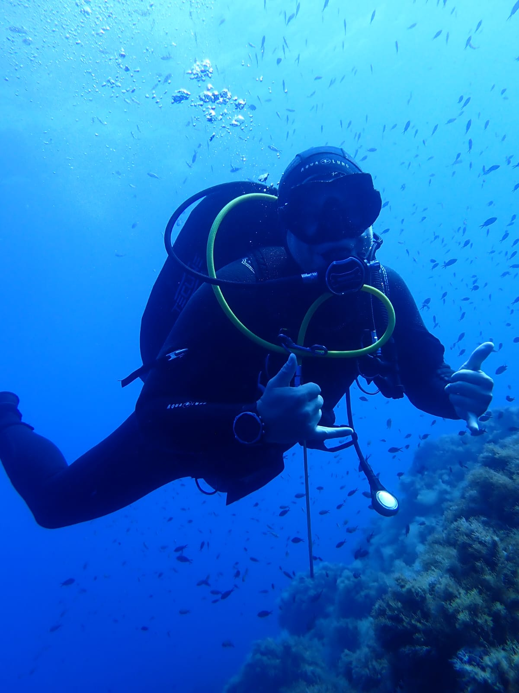
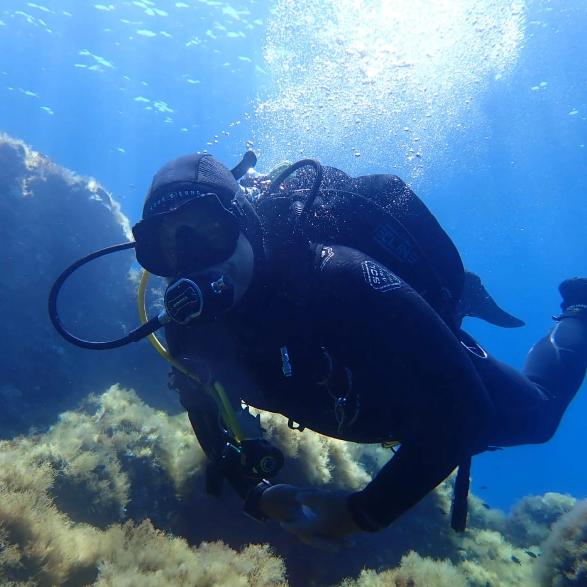
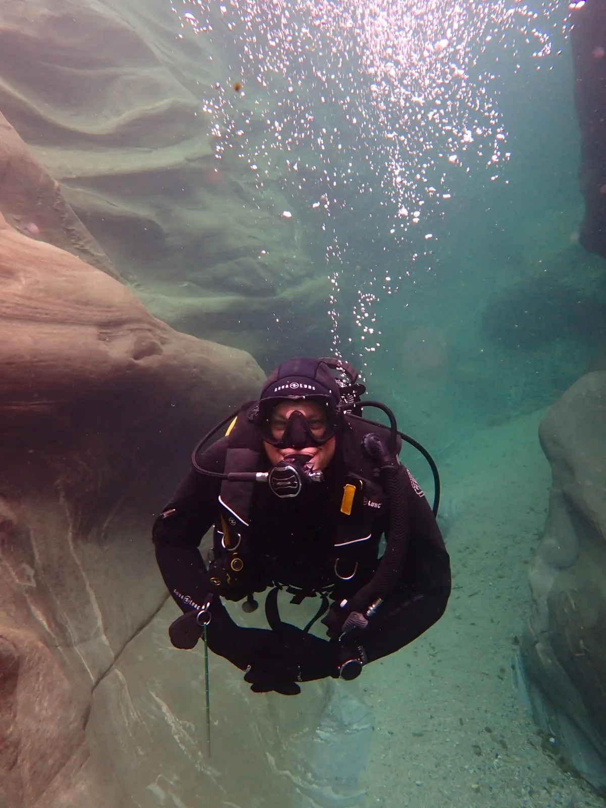

Corsi di Subacquea & Escursioni
Formazione Professionale SDI per Tutti i Livelli
Vedi Corsi & ServiziQualifiche Istruttore SDI
Sono un istruttore certificato SDI (Scuba Diving International), offrendo formazione completa di subacquea ed escursioni guidate. Insegno le seguenti specialità:
- Primo Soccorso - RCP, AED ed erogazione di O₂ - Formazione alle emergenze in immersione
- Subacqueo con Computer - Padroneggiate l'uso del computer subacqueo per immersioni più sicure
- Navigazione - Navigazione subacquea con bussola e riferimenti naturali
- Controllo Avanzato della Galleggiabilità - Affinate trim e galleggiabilità per un impatto minimo
- Consapevolezza degli Ecosistemi Marini - Comprendere gli habitat marini e l'immersione responsabile
- Notte/Visione Limitata - Esplorate il mondo sottomarino in condizioni di scarsa luminosità
- Ricerca (Subacquea scientifica) - Metodi per condurre ricerche subacquee
Ulteriori possibilità (contattatemi per maggiori informazioni):
- Nitrox Computer (<40%)
- Barca
- Costa/Spiaggia
- Deriva
- Stagna
In sviluppo:
- Conservazione Marina
- Yoga subacqueo
Standard Internazionali di Certificazione
SDI è membro del WRSTC (World Recreational Scuba Training Council), che stabilisce gli standard globali per la formazione subacquea ricreativa. Questi sono gli stessi standard internazionali riconosciuti dalle principali organizzazioni subacquee in tutto il mondo, tra cui PADI, SSI e altre. Ciò significa che la tua certificazione SDI è riconosciuta a livello globale e segue gli stessi rigorosi standard di sicurezza e formazione delle altre principali agenzie di certificazione.
Tutte le certificazioni rilasciate tramite SDI rispettano gli standard WRSTC, garantendo che le tue qualifiche subacquee siano riconosciute a livello internazionale e accettate nei centri subacquei di tutto il mondo. Che tu stia facendo immersioni nei Caraibi, nel Mar Rosso o nel Pacifico, la tua certificazione SDI sarà riconosciuta ovunque tu vada.
Corsi & Servizi
* Si prega di notare che l'attrezzatura subacquea deve essere noleggiata presso un negozio di subacquea. Posso assistervi fornendo raccomandazioni sui negozi di subacquea e consigliandovi su quale attrezzatura noleggiare per il vostro corso o escursione.

Intro Dive

Corsi di Subacquea

Escursioni Guidate
Contattaci
Pronto a iniziare il tuo viaggio subacqueo? Contattaci per discutere delle tue esigenze di formazione o prenotare un'escursione.